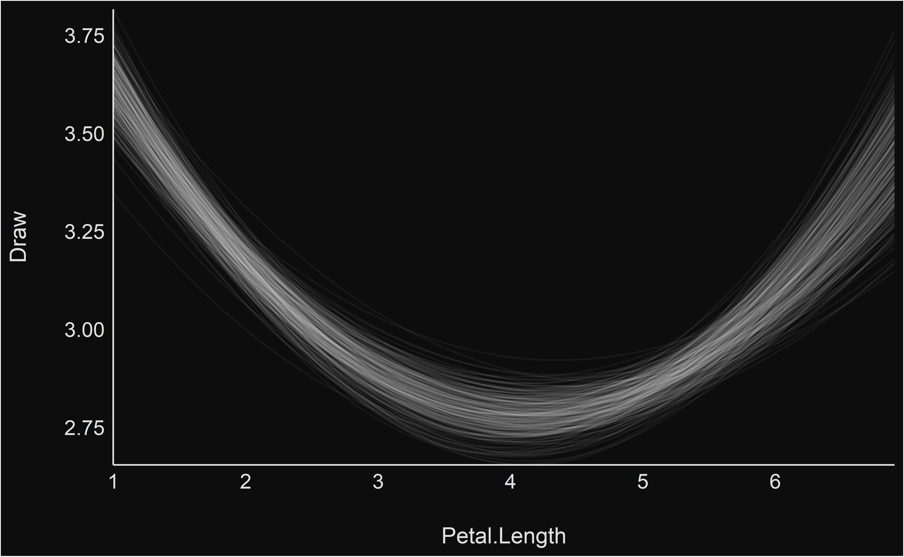
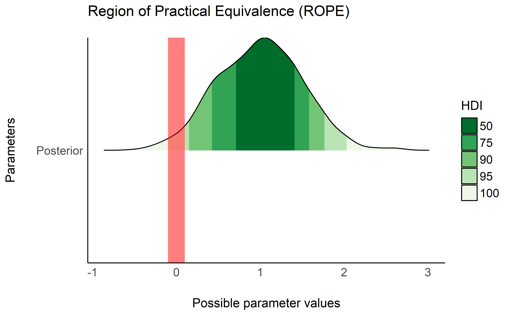
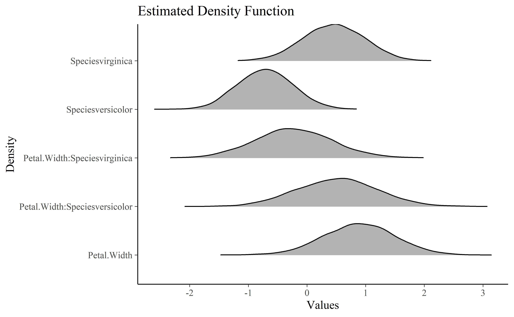
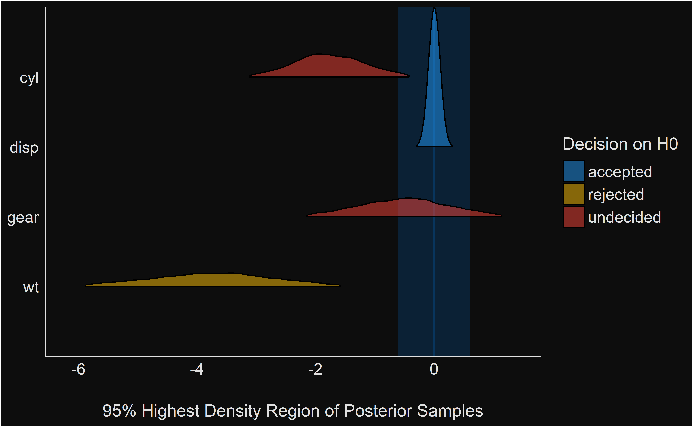
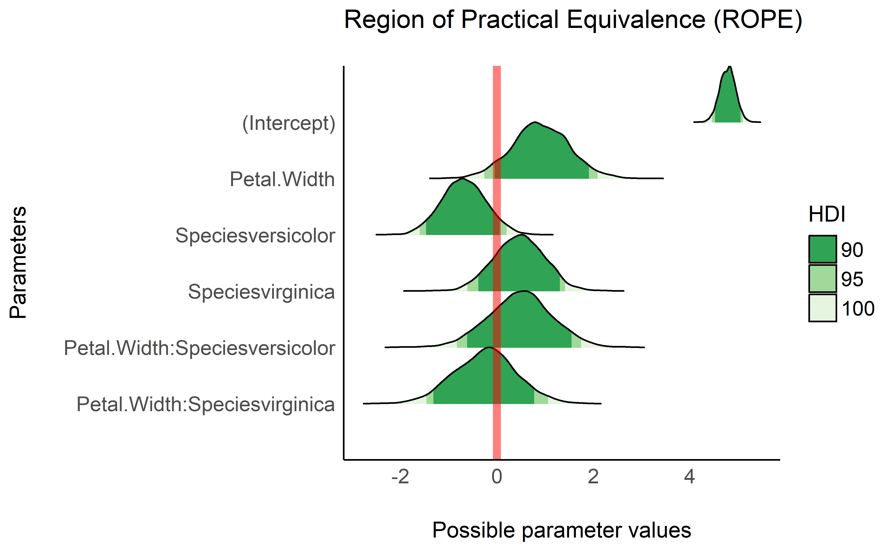
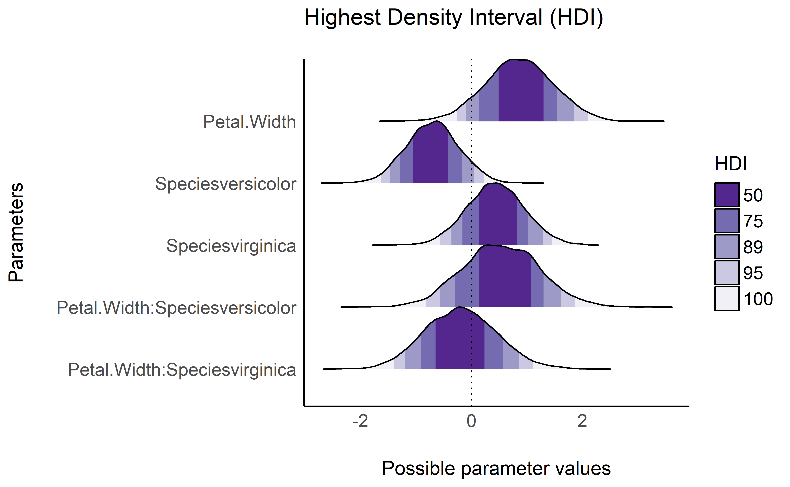
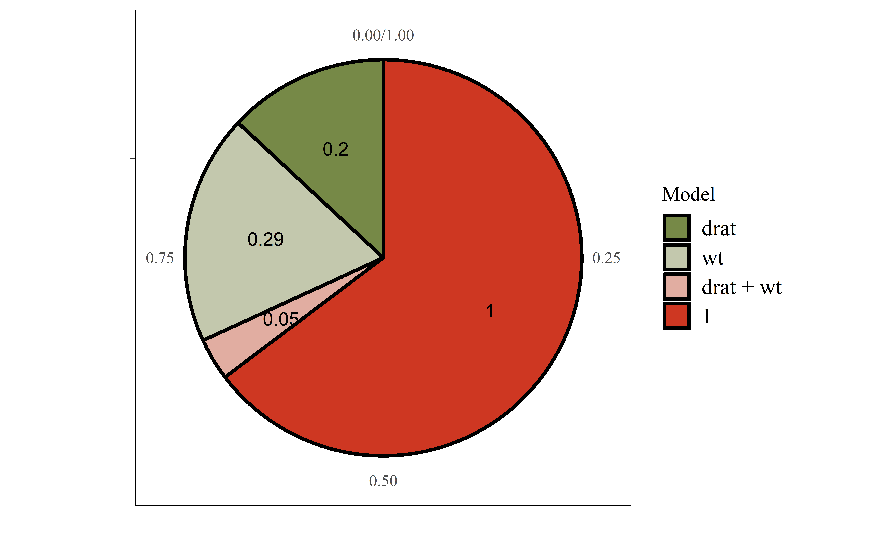
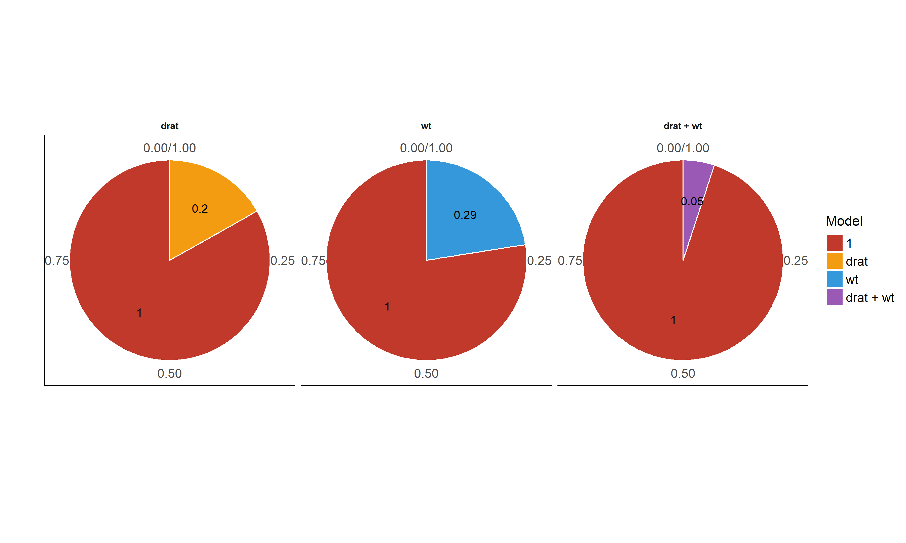

“Damned are those who believe without seeing”
Features
Themes
- Modern
library(ggplot2)
ggplot(iris, aes(x = Sepal.Width, y = Sepal.Length, color = Species)) +
geom_point2() + theme_modern()
- Blackboard
library(rstanarm)
library(estimate)
rstanarm::stan_glm(Sepal.Width ~ poly(Petal.Length, 2), data = iris) %>%
estimate::estimate_fit(keep_draws = TRUE, length = 100, draws = 250) %>%
estimate::reshape_draws() %>% ggplot(aes(x = Petal.Length,
y = Draw, group = Draw_Index)) + geom_line(color = "white",
alpha = 0.05) + scale_x_continuous(expand = c(0, 0)) + scale_y_continuous(expand = c(0,
0)) + theme_blackboard()
Palettes
- Material design
p1 <- ggplot(iris, aes(x = Species, y = Sepal.Length, fill = Species)) +
geom_boxplot() + theme_modern(axis.text.angle = 45) + scale_fill_material_d()
p2 <- ggplot(iris, aes(x = Species, y = Sepal.Length, fill = Species)) +
geom_violin() + theme_modern(axis.text.angle = 45) + scale_fill_material_d(palette = "ice")
p3 <- ggplot(iris, aes(x = Petal.Length, y = Petal.Width, color = Sepal.Length)) +
geom_point2() + theme_modern() + scale_color_material_c(palette = "rainbow")The plots function allows us to plot the figures side by side.

Better looking points
geom_points2 and geom_jitter2 allow points without borders and contour.
normal <- ggplot(iris, aes(x = Petal.Width, y = Sepal.Length)) +
geom_point(size = 8, alpha = 0.3) + theme_modern()
new <- ggplot(iris, aes(x = Petal.Width, y = Sepal.Length)) +
geom_point2(size = 8, alpha = 0.3) + theme_modern()
plots(normal, new, ncol = 2)
Half-violin Half-dot plot
Create a half-violin half-dot plot, useful for visualising the distribution and the sample size at the same time.
ggplot(iris, aes(x = Species, y = Sepal.Length, fill = Species)) +
geom_violindot(fill_dots = "black") + theme_modern() + scale_fill_material_d()
BayestestR
Highest Density Interval (HDI)
library(rstanarm)
library(bayestestR)
model <- rstanarm::stan_glm(Sepal.Length ~ Petal.Width * Species,
data = iris)
result <- hdi(model, ci = c(0.5, 0.75, 0.9, 0.95))
plot(result) + theme_modern() + scale_fill_brewer(palette = "Purples",
direction = -1)
Probability of Direction (pd)
result <- p_direction(model)
plot(result) + theme_modern() + scale_fill_manual(values = c("red",
"green"))
Region of Practical Equivalence (ROPE)
result <- rope(model, ci = c(0.9, 0.95))
plot(result, data = model, rope_color = "red") + theme_modern() +
scale_fill_brewer(palette = "Greens", direction = -1)
Test for Practical Equivalence
model <- rstanarm::stan_glm(mpg ~ wt + gear + cyl + disp, data = mtcars)
result <- equivalence_test(model)
plot(result) + theme_blackboard() + scale_fill_material()
result <- equivalence_test(model, ci = c(0.9, 0.95))
plot(result) + theme_abyss() + scale_fill_flat()
Bayes Factors (BFs)
result <- bayesfactor_savagedickey(model)
## Sampling Priors
plot(result) + theme_modern() + scale_color_material() + scale_fill_material()
lm0 <- lm(qsec ~ 1, data = mtcars)
lm1 <- lm(qsec ~ drat, data = mtcars)
lm2 <- lm(qsec ~ wt, data = mtcars)
lm3 <- lm(qsec ~ drat + wt, data = mtcars)
result <- bayesfactor_models(lm1, lm2, lm3, denominator = lm0)
plot(result, n_pies = "one", value = "probability") + theme_modern() +
scale_fill_pizza(reverse = TRUE)
plot(result, n_pies = "many", value = "BF") + theme_modern() +
scale_fill_flat(palette = "rainbow", reverse = TRUE)